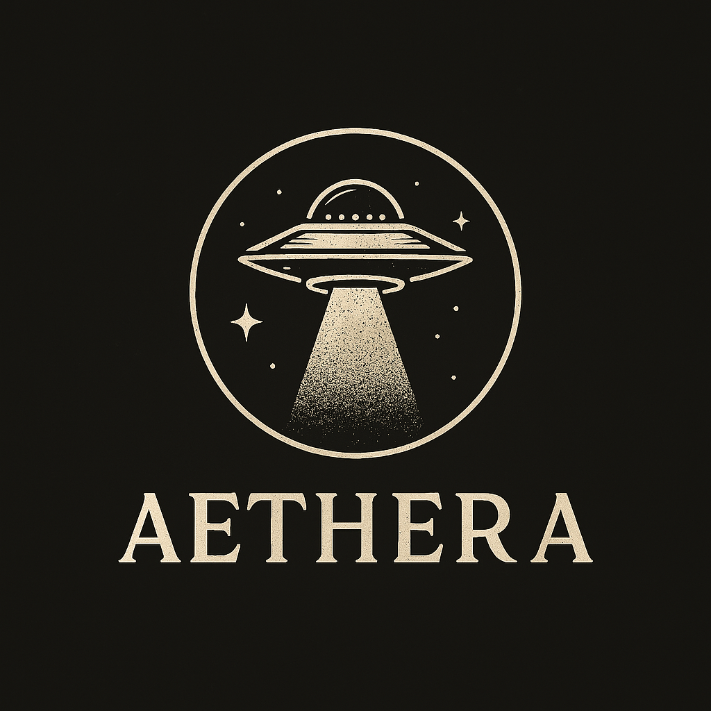

Dans une maison de retraite, une infirmière affirme avoir été agressée par une présence invisible. Mulder et Scully découvrent un traitement expérimental à base de champignons, censé restaurer la cognition. Les phénomènes paranormaux s’intensifient : des esprits deviennent tangibles, porteurs de souffrance et de colère.
- Traitement expérimental administré en secret.
- Stimulation cérébrale et ‘mémoire’ renforcée.
- Manifestations paranormales hostiles.
- Mulder frôle la mort lors d’une attaque ‘invisible’.
- Même après l’arrêt, une part du phénomène persiste.
Culpabilité et oubli : les esprits incarnent la mémoire rejetée. Science et spirituel se confondent dans un lieu où l’on attend la fin.
« Maybe the dead are closer to us than we think. » / « …plus proches qu’on ne le croit. »
Un épisode à la frontière du surnaturel et de la science dévoyée, qui laisse volontairement une zone d’inexpliqué.
